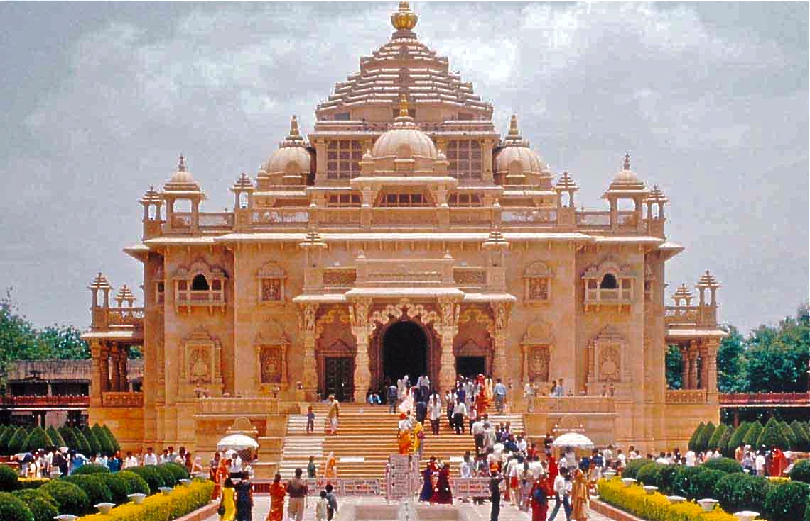

Swaminarayan Akshardham in New Delhi epitomizes 10,000 years of Indian culture in all its breathtaking grandeur, beauty, wisdom an d bliss. It brilliantly showcases the essence of India’s ancient architecture, traditions and timeless spiritual messages. The Akshardham experience is an enlightening journey through India’s glorious art, values and contributions for the progress, happiness and harmony of mankind. The Swaminarayan Akshardham complex was built in only five years through the blessings of HDH Pramukh Swami Maharaj of the Bochasanwasi Shri Akshar Purushottam Swaminarayan Sanstha (BAPS) and the colossal devotional efforts of 11,000 artisans and thousands of BAPS volunteers. Heralded by the Guinness World Record as the World’s Largest Comprehensive Hindu Temple, the complex was inaugurated on 6 November, 2005.
A traditional mandir (temple) dedicated to Bhagwan Swaminarayan that reflects the beauty and spirituality of India’s ancient art, culture, and architecture
A hallowed spiritual tradition in which prayers are offered for world peace and continual peace for oneself, family, and friends with the water of 151 holy rivers, lakes and ponds of India.